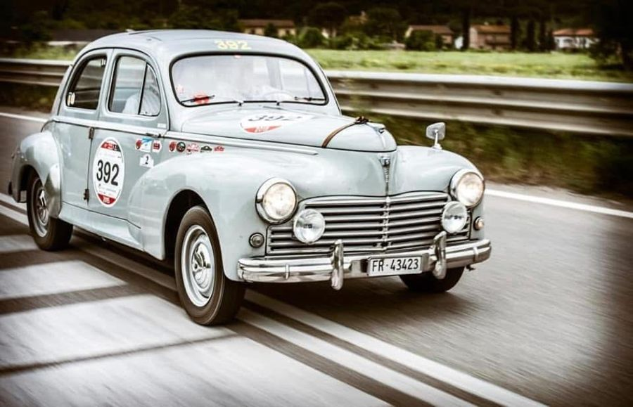

Abholung Grossraum Bern
Oldtimer mieten in Bern? Lehnen Sie sich lieber zurück.
Wer nach «Oldtimer mieten Bern» sucht, möchte meist das Erlebnis eines historischen Automobils geniessen – nicht aber die Verantwortung für ein fremdes Getriebe tragen. Bei tischleinfahrdich.ch werden Sie im Grossraum Bern abgeholt, sitzen auf dem Beifahrerplatz und fahren mit dem Halter zu einem ausgewählten Landgasthof.
Schöne Strecken ab dem Grossraum Bern
Ab dem Grossraum Bern öffnen sich reizvolle Landstrassen ins Gürbetal Richtung Riffenmatt, durch das Emmental bis nach Ursenbach oder dem Thunersee entgegen nach Steffisburg.
Die Fahrzeuge
Vier Automobile, vier Charaktere
Sie wählen Ihr Fahrzeug bei der Anfrage, nach Verfügbarkeit. Alle werden von ihrem Halter gefahren und gepflegt.

Porsche 356 B Coupé

Peugeot 203 C

Porsche Boxster S 3.2
Gut zu wissen
Häufige Fragen
Kann man bei tischleinfahrdich.ch in Bern einen Oldtimer mieten?
Nein, wir vermieten keine Fahrzeuge und bieten keine gewerbliche Personenbeförderung an. Sie erleben eine kuratierte Ausfahrt als Gast auf dem Beifahrerplatz gegen einen Unkostenbeitrag.
Wo genau erfolgt die Abholung im Grossraum Bern?
Treffpunkt ist das Hotel Bellevue Palace in Bern. Auf Wunsch holen wir Sie zu Hause im Grossraum Bern ab. Nach dem Mittagessen bringen wir Sie wieder zurück.
Wie hoch ist der Unkostenbeitrag ab Bern?
CHF 170 pro Stunde Fahrzeit für Hin- und Rückfahrt, ab 1 Stunde. Ab Bern sind das je nach Ziel 2 bis 3 Stunden, also CHF 340.– bis 510.–.